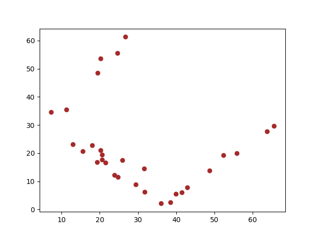
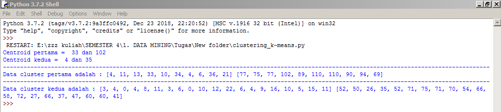

Penjelasan K - Means Clustering¶
K-Means adalah suatu metode penganalisaan data atau metode Data Mining yang melakukan proses pemodelan tanpa supervisi (unsupervised) dan merupakan salah satu metode yang melakukan pengelompokan data dengan sistem partisi.
Untuk melakukan clustering kita perlu algoritma yang mendukung untuk pengimplementasian dari metode tersebut, salah satunya K-means.
Clustering berarti kita akan mengelompokkan data kedalam beberapa cluster yang mana data didalam satu cluster akan memiliki kemiripan yang tinggi dan data akan memiliki perbedaan yang cukup besar antara cluster satu dengan cluster yang lainnya. jumlah cluster ( K ) dapat kita tentukan sendiri.
Berikut merupakan kelebihan dan kekurangan K-Means Clustering¶
Kelebihan :¶
- Menggunakan prinsip yang sederhana
- Waktu yang digunakan untuk menjalankannya relatif cepat
- Sangat fleksibel, dapat dengan mudah diadaptasi
- Sangat umu digunakan
Kekurangan :¶
- Tidak optimal digunakan untuk data yang jumlahnya terlalu banyak
- Jika menggunakan K buah acak maka tidak terjamin untuk menemukan kumpulan cluster yang optimal
Algoritma K - Means Clustering¶
- Tentukan jumlah cluster (K) yang kita inginkan.
- Inisiasi centroid untuk setiap cluster secara acak. Centroid adalah data yang merepresentasikan suatu kelompok.
- Hitung kedekatan ( distance ) setiap data terhadap centroid, kemudian masukkan data tersebut ke cluster yang centroid-nya memiliki sifat terdekat dengan dirinya (yang nilainya paling kecil).
- Pilih kembali centroid untuk masing-masing cluster ,yaitu mean (rata-rata) nilai data dari setiap cluster yang sama .
- Ulangi langkah ke-3 sampai tidak ada perubahan anggota untuk semua cluster, atau sampai batas yang ditentukan dari perulangan anggota yang sama.
Implementasi K-Means Clustering dengan Python¶
Disini saya akan menjelaskan tentang pengimplementasian K - Means Clustering pada dataset " Jumlah Posyandu di Bandung.csv " yang mana dataset tersebut saya dapatkan dari www.data.bandung.go.id .
Tujuan saya akan mengclustering dataset ini adalah untuk mengetahui kelompok data pada kolom mandiri dan jumlah.
Untuk pengimplementasiannya saya menggunakan bahasa pemrograman Python 3.7.2 dan script yang saya tuliskan dibawah merupakan script yang tulis sendiri.
Berikut adalah langkah - langkahnya :¶
- Install libraries
pip install pandas pip install matplotlib
Untuk menginstall kita harus lakukan di CMD, lakukan penginstalan ketiga librari diatas secara bergantian. Pandas digunakan untuk membaca file csv dan memudahkan kita untuk membagi fields pada csv menjadi beberapa list / array. sedangkan matplotlib digunakan untuk visualisasi data yang mana dengan librari ini kita dapat melihat kelompok data atau persebaran data.
- Membuat project baru dan mengimport libraries
import csv import math import random import pandas as pd import matplotlib.pyplot as plt
Import CSV merupakan librari asli dari python yang berfungsi memanggil file csv yang akan kita analisis, import math juga merupakan librari asli dari python yang berfungsi untuk melakukan perhitungan seperti mencari akar suatu bilangan, import random berfungsi untuk pengambilan nilai pada list secara acak yang pada kasus ini berfungsi dalam pengambilan centroid, import pandas untuk membaca file csv, dan import matplotlib.pyplot as plt berfungsi untuk visualisasi cluster data.
- Membuat variabel bernama akar untuk memudahkan mencari akar suatu nilai
akar = math.sqrt
- Mengambil kolom mandiri dan kolom jumlah
def program(): dataset = pd.read_csv("data-jumlah-posyandu-2018.csv") # mengambil kolom 4 dan 5 kol_mandiri = dataset.iloc[:, 4].values kol_jumlah = dataset.iloc[:, 5].values
- Mencari centroid acak, disini saya menggunakan k=2 atau 2 cluster
def mencari_centroid_dst(): # mengambil letak centroid pertama acak random1 = [] for i in range(30): random1.append(i) hasil_random1 = random.choice(random1) # hasil centroid pertama acak cen_pertama1 = kol_mandiri[hasil_random1] cen_pertama2 = kol_jumlah[hasil_random1] # mengambil letak centroid kedua acak random2 = [] for j in range(30): random2.append(j) hasil_random2 = random.choice(random2) # hasil centroid kedua acak cen_kedua1 = kol_mandiri[hasil_random2] cen_kedua2 = kol_jumlah[hasil_random2]
- seleksi kondisi jika hasil centroid cluster 1 sama dengan cluster 2 maka program akan mencari centroid lagi, tetapi jika tidak maka program akan memulai mencari jarak / distance, serta mencari anggota cluster 1 dan anggota cluster 2.
if (cen_pertama1==cen_kedua1 and cen_pertama2==cen_kedua2): mencari_centroid_dst() else: # menghitung distance ke centroid 1 dan centroid 2 hasil_hitung_pertama1 = [] hasil_hitung_pertama2 = [] hasil1 = [] hasil2 = [] anggota1_kiri = [] anggota1_kanan = [] anggota2_kanan = [] anggota2_kiri = [] jml_awal1 = [] jml_awal2 = [] for a in range(len(kol_mandiri)): for b in range(len(kol_jumlah)): if (a==b): jarak1 = akar(((cen_pertama1 - kol_mandiri[a])**2) + ((cen_pertama2 - kol_jumlah[a])**2)) jarak2 = akar(((cen_kedua1 - kol_mandiri[a])**2) + ((cen_kedua2 - kol_jumlah[a])**2)) if(jarak1 < jarak2): hasil1.append(jarak1) anggota1_kiri.append(kol_mandiri[a]) anggota1_kanan.append(kol_jumlah[a]) hasil_hitung_pertama1.append(jarak1) jml_awal1.append(jarak1) hasil_hitung_pertama2.append(jarak2) else: hasil2.append(jarak2) anggota2_kanan.append(kol_jumlah[a]) anggota2_kiri.append(kol_mandiri[a]) hasil_hitung_pertama2.append(jarak2) jml_awal2.append(jarak2) hasil_hitung_pertama1.append(jarak1)
- Setelah itu mencari rata - rata dari semua anggota tiap cluster sebagai pusat centroid yang baru dan mencari distance lagi serta mencari anggota cluster 1 yang baru dan anggota cluster 2 yang baru pula.
# menghitung rata-rata tiap kolom sebagai pusat cluster yang baru hasil1_baru = [] hasil2_baru = [] anggota_clus1 = [] anggota_clus2 = [] seluruh_kiri = [] seluruh_kanan = [] anggota1_kiribaru = [] anggota1_kananbaru = [] anggota2_kiribaru = [] anggota2_kananbaru = [] rata1_a = sum(anggota1_kiri) / len(anggota1_kiri) rata1_b = sum(anggota1_kanan) / len(anggota1_kanan) rata2_a = sum(anggota2_kiri) / len(anggota2_kiri) rata2_b = sum(anggota2_kanan) / len(anggota2_kanan) for j in range(len(kol_mandiri)): for k in range(len(kol_jumlah)): if(j==k): dist1 = akar(((rata1_a - kol_mandiri[j])**2) + ((rata1_b - kol_jumlah[j])**2)) dist2 = akar(((rata2_a - kol_mandiri[j])**2) + ((rata2_b - kol_jumlah[j])**2)) if (dist1<dist2): hasil1_baru.append(dist1) seluruh_kiri.append(dist1) seluruh_kanan.append(dist2) anggota_clus1.append(kol_mandiri[j]) anggota1_kiribaru.append(kol_mandiri[j]) anggota1_kananbaru.append(kol_jumlah[j]) else: hasil2_baru.append(dist2) seluruh_kanan.append(dist2) seluruh_kiri.append(dist1) anggota_clus2.append(kol_mandiri[j]) anggota2_kiribaru.append(kol_mandiri[j]) anggota2_kananbaru.append(kol_jumlah[j])
- Jika hasil anggota cluster 1 dan anggota cluster 2 sudah tidak ada yang berubah maka akan ditampilkan output scatter plot dari data cluster 1 dan cluster 2, jika tidak maka program akan mengulang lagi proses pencarian rata - rata tiap cluster dan mencari anggota cluster lagi.
if (len(hasil1)==len(hasil1_baru) and len(hasil2)==len(hasil2_baru)): plt.scatter(seluruh_kiri,seluruh_kanan,c='brown') plt.show() print ("Centroid pertama = ",cen_pertama1,"dan",cen_pertama2) print ("Centroid kedua = ",cen_kedua1,"dan",cen_kedua2) print ("----------------------------------------------------------------------------------------------------------------------------------------------") print ("Data cluster pertama adalah :",anggota1_kiri,anggota1_kanan) print ("----------------------------------------------------------------------------------------------------------------------------------------------") print ("Data cluster kedua adalah :",anggota2_kiri,anggota2_kanan) else: program() mencari_centroid_dst() program()
- Hasil run program diatas :


Diatas merupakan penjelasan tentang studi kasus k - means clustering pada dataset jumlah posyandu di bandung. Semoga dapat diterima dan dipahami dengan mudah.